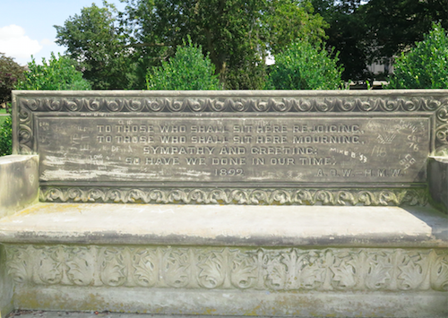

It’s Not Just a Bench! At Least to Me...
At first glance this dirty, old bench that overlooks the slope is insignificant. People have carved their names into it, and moss is growing on some parts of it. However, there’s a story and meaning behind this seemingly meaningless bench.
The bench was donated by A.D. White and his wife Helen Magill White in 1892. The writing on the bench says:
To those who shall sit here rejoicing,
To those who shall sit here mourning,
Sympathy and greeting;
So have we done in our time.
1892 A.D.W.-H.M.W.
Once taken into perspective you realize that this bench is over a hundred years old! Imagine all the people who have sat there experiencing a wide variety of emotions. There’s something comforting in knowing that the feelings you’re feeling aren’t unusual or anything new to the human race. There has been at least one other person who has sat at that bench staring at Libe slope who can empathize and understand. You’re really not alone.
Yes, Cornell is a physical place. However, on that bench you can connect with Cornell spiritually. I know that sounds silly and a couple of eyes have probably just rolled. But, if you ever have the time sit there and just think about anything. It’s a peaceful spot, especially when the chimes from McGraw Tower play. I appreciate Cornell most at that spot and I feel most connected to all Cornellians there, more than I do at the rowdy hockey games. I don’t know the names of all the Cornellians who sat there and they don’t know me. All I know is that what I share in common with them is that we’ve all called Cornell home. We all know that Cornell, at times, can be an overbearing mother that challenges us and pushes us to our limits. However, in the end every person who has sat there feeling lost, confused, mourning, victorious, elated, or joyful share another thing in common. We all make it in the end. Cornell strengthens our spirit and makes us confident to go off into the world and be a revolutionary change in the lives of others. We all contribute to what it means to have the fiery Big Red in our soul, and we take it with us even after we graduate.